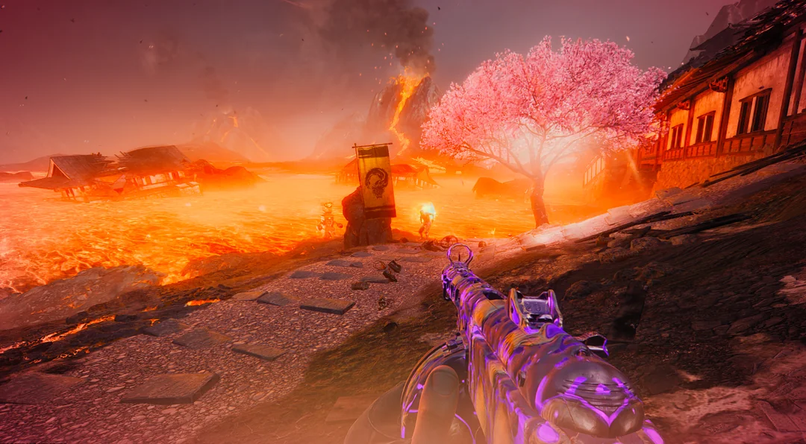

Black Ops 7
Game Designer on the Zombies team, responsible for:
- Design & implementation of Assault Waves, Weather systems, Traps, Fasttravel, and 9 Side Quests/Easter Eggs on Kowakujo
- Polishing features on Paradox Junction & Rex Infernus
Kowakujo
I designed and implemented core systems on Kowakujo, the fifth Zombies map in BO7. In my work on Assault Waves, I set up unique tower defense-like capture objectives for players to defend against a scripted zombie onslaught headed by the Dragon map boss.

I also created the riflemen traps that can be used strategically during this time, as well as the four upgrades for the traps, which players can earn. I also set up a new "On Sale" feature in the crafting table, with tunable values to put equipment and killstreaks on sale during the preparation phase of these rounds.
I also designed the Cherry Blossom and Ash weather systems for Kowakujo. Cherry Blossoms overheal players and allow them to create Sakura Storms that buff player speed; Ash reduces visibility, impedes movement slightly, and damages players slowly. These events happen around the map, sometimes passively, and sometimes directly as a result of players' actions.

I created and implemented 9 Side Quests/Easter Eggs for Kowakujo! Some of my favorites include:
- The Mecha Suit-Kaijuu Battle on a tiny island that unlocks use of the Mecha Suit on the map
- The Gacha Machine you can discover by purifying Ash, with weapon charms granting unique effects
- The Maneki Neko equipment upgrade that deploys a protecive bubble shield
- The Horse Race obstacle course you can challenge your friends to